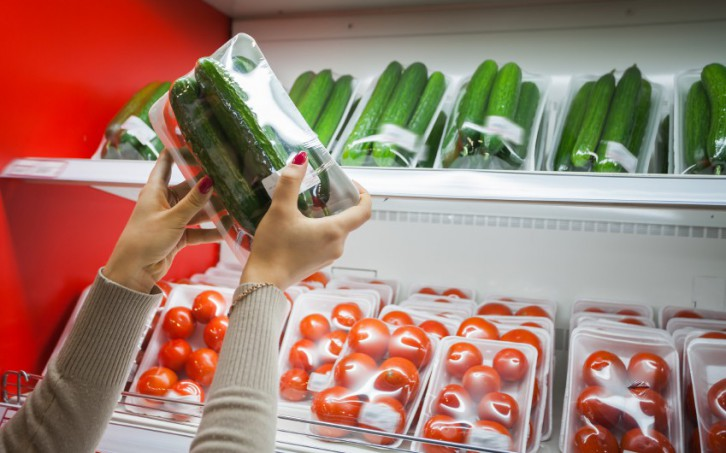
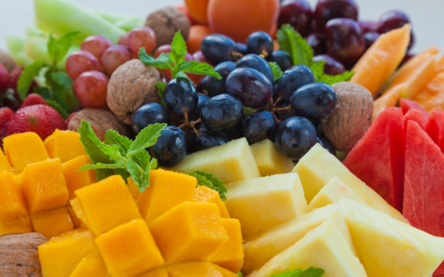

Cada vez más gente está concienciada con la importancia del reciclaje. Sin embargo, aún queda mucho trecho por recorrer, y a veces nos cuesta saber cómo reciclar adecuadamente algunos productos como medicamentos, bombillas, móviles, plásticos... incluso reciclando, ¡también contaminamos!
Medida: el mejor reciclaje es el que no debe realizarse. Por eso, cuando compres, procura adquirir productos a granel (siempre que te sea posible), o con envases respetuosos con el medio ambiente; reduce el volumen de residuos que generas, y asegúrate de que todos los miembros de tu familia saben cómo reciclar correctamente. En caso de duda, puedes consultar algunas páginas con información útil al respecto, como Ecoembes.

En relación con lo anterior, podemos añadir que el consumo de determinados productos en lugar de otros daña en mayor medida el medio ambiente. Por ejemplo en alimentación, que representa una buena parte de nuestro consumo diario, las frutas y verduras fuera de temporada (producidas en invernaderos, o provenientes de lugares muy lejanos obtenidas y transportadas sin garantías ecológicas), los alimentos genéticamente modificados o el abuso de carne y pescado son algunos de los malos hábitos que muestran cómo contaminamos el medio ambiente sin darnos cuenta, y que podemos corregir de un modo sencillo y sin esfuerzo.
Medida: puedes ser más responsable con tu consumo diario consumiendo productos de proximidad, adquiriéndolos directamente de los productores o en alianza con otros consumidores: las cooperativas de consumo son una opción cómoda, sencilla y respetuosa con el medio ambiente.
